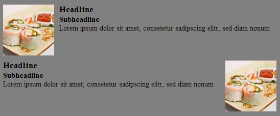

CSS Konzepte
Verschiedene Ansätze und Konzepte zur Gestaltung von CSS
Übersicht
- Status Quo
- OOCSS
- BEM
- SMACSS
Status Quo
- Schriftgrößen
- Innenabstände
- Außenabstände
'font-size' - 209 matches in 'css'
'padding' - 705 matches in 'css'
'margin' - 1090 matches in 'css'
OOCSS
Objektorientiertes CSS
https://github.com/stubbornella/oocss
OOCSS-Ansatz: Trennung von Objekt und Aussehen
Objekt: Das Objekt beschreibt die Struktur eines Modules, wie es von der Codestruktur her mehrfach auf einer Webseite vorkommen kann.
Aussehen: Über die entsprechende(n) Klasse(n) wird das Aussehen des Modules in seinem jeweiligen Kontext gesteuert.
Module
Block Head
Block Body
Styling in CSS nur sofern es seitenweiten Definitionen entspricht
h2 {
color: #000;
font-size: 1.4em;
}
.mod {
margin: 12px;
}
Styling eines Modules
Block Head
Block Body
Styling durch Knüpfung an die inhaltsbezogene Klasse
.news h2 {
color: #fff;
}
.news .body {
font-size: 12px;
}
Media Modul


Media Modul - CCS Part
Styling durch Knüpfung an die inhaltsbezogene Klasse
.media {
margin: 10px;
}
.media .body {
overflow: hidden;
_overflow: visible;
zoom:1;
}
.media .img {
float: left;
margin-right: 10px;
}
.media .img img {
display: block;
}
.media .imgExt {
float: right;
margin-left: 10px;
}
Tipps zur Nutzung von OOCSS
- Vermeidung von IDs als inhaltlichem Selektor
- Keine Deklarationen die an den Elementbaum geknüpft sind, wie body #content .class
- Keine Verknüpfung von Elementen mit Klassendeklarationen, z.B. div.class oder p.class
- Minimierung von CSS-Selektoren
BEM
Block, Element, Modifier
http://bem.info/
BEM-Ansatz: Konzeption beschreibender CSS-Klassen
Block: Block gibt den Rahmen vor in dem sich Elemente befinden, z.B. ein Formular.
Element: Innnerhalb eines Blocks befindliche Elemente, z.B. Eingabefelder.
Modus: Beschreibung des Zustands eines Elements, z.B. Aktiv, Sichtbar, Nicht sichtbar
Blöcke
Aus der Benennung eines Blocks soll hervorgehen was sich innerhalb dieses Blocks befindet.
.site-search {}
Elemente
Elemente sind Bestandteile des Blocks, die diesen mit Funktionen und Inhalt füllen. Nimmt man eines dieser Elemente aus dem Block heraus, so verliert auch der Block seine Funktionalität. z.B. das Element "input field" aus dem Block "Form".
.site-search__field {}
Modifier
Modifier sind Klassen, die eine modifizierte Version eines bereits vorhandenen Block beschreiben.
.site-search--full {}
SMACSS
Scalable and Modular Architecture for CSS
http://smacss.com/
SMACSS-Ansatz: Kategorisierung von CSS
Kategorisierung schärft den Blick auf vorhandene Pattern und erleichtert das Anlegen neuer Patterns.
Base: Base Styles beinhalten grundlegende Stylings einer Webseite.
Layout: Styles die das Grundgerüst einer Seite definieren, z.B. footer, body, header
Module: Module befinden sich innerhalb der Layout-Elemente.
Status: Status Stylings definieren den Status eines Elements und überschreibt das eigenliche Verhalten eines Modules.
Theme: Themes beschreiben das Aussehen eines Modules.
Base
Unter Base kategorisierte Stylings beinhalten die default-Angaben einer Seite, wie Schriftgrößen, Standardfarben, Resets.
Layout
Layouts beinhalten das strukturierende Grundgerüst der Seite, wie die Definition des Footers oder des Headers
Neben dem Grundgerüst werden in diesem Bereich auch strukturierende Stylings via Kaskadierung angelegt. z.B. .fixed .header
Module
Module sind das Fleisch auf den Rippen des Grundgerüsts. Hier werden die einzelnen Stylings für z.B. Menüs, Formulare oder Boxen definiert.
Status
Unter die Kategorie Status fallen Stylings, die in Abhängigkeit zu einem bestimmten Ereignis generiert werden und dabei Module beeinflussen.
Beispiele: Fehler- oder Erfolgsmeldungen. Via Javascript veränderte Sichtbarkeiten.
Themes
Themes stylen Module in Abhängigkeit zu deren Einsatz. Eine Box kann z.B. mehrfach auf einer Seite eingesetzt werden. Im Fall A würde via Theme-Klasse ein grauer Rahmen gezogen, im Fall B wird diese Border blau.
Fazit
- Modularisierung unterstützt dabei Redundanzen zu vermeiden.
- Einheitlicher Code benötigt abgestimmte Code- und Namens-Konventionen.
- Beschreibende Klassen und IDs, wie margin12, fontsize15,..., sind zu vermeiden.
- Elemente von Außen nach Innen stylen
Credits
- Nicole Sullivan / @stubbornella:
https://github.com/stubbornella/oocss - Yandex:
http://bem.info - Jonathan Snook / @snookca:
http://snook.ca / http://smacss.com - Harry Roberts / @csswizardry:
http://csswizardry.com - Nicolas Gallagher / @necolas:
http://nicolasgallagher.com - Made with reveal.js by Hakim El Hattab:
https://github.com/hakimel/reveal.js